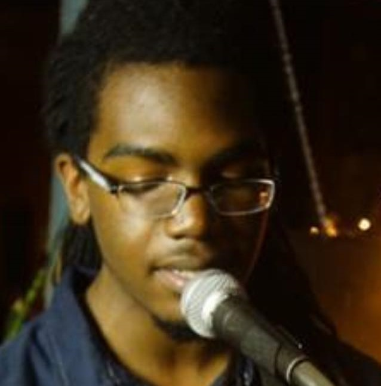
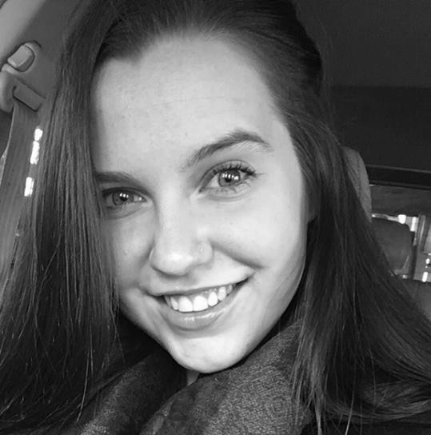

R Coffeehouse, 1144 Bitting St, Wichita, KS 67203, USA
ABOUT THE SHOW
R Sound Presents is a local monthly music and poetry show hosted at R Coffee House (1144 N Bitting Ave). Every month we showcase some of the best musicians and poets from around the Wichita area on our humble stage. While you're there, try some delicious coffee served by R Coffee House's wonderful baristas. We do our best to make sure we give you a Tuesday night you won't soon forget!
MEET THE HOSTS

Kenon Brinkley
Kenon “KJ” Brinkley doesn’t know what he wants in his bio. Hell, he rarely knows what he’s doing on the mic, but he’s happy to dabble in anything from hosting, to singing, to rapping, to poetry, the tenor sax, or whatever he can get his hands on. A Rick to many, with a heart pickled to peculiarity by music, art, and anime, KJ would rather you just come see the show to learn a bit of what he’s all about.
Kelsey Rawcliffe
Kelsey is 21 years old, and a junior at Wichita State University in pursuit of a nursing degree. She also works as a CNA at Via Christi St. Francis hospital. Kelsey solely performs poetry at R Sound shows but explores the visual arts through painting, drawing, and ceramics.

Xan Mattek
Xan Mattek is a sophomore at Wichita State University studying musical theatre. She is originally from Salina, where though it is a small town, she has always been able to find pockets of artistic communities to thrive in. When she arrived in Wichita R Sound was one of the first creative spaces to invite her in and she is so glad that she's been granted the opportunity to invite others as well per her supportive cohosts Kenon and Kelsey.
HOW TO TAKE PART
R Sound Presents takes place on a Tuesday each month from
7-10PM. All you need to do is stop by the R Coffeehouse on 1144 N Bitting Ave and enjoy the show!
You're free to come and go as you like, but seats are limited and fill up fast so come in early if you
want to sit down. If you're looking to perform head over to our contact page
and send a message to one of our hosts! R Sound Presents is not an open mic so this is the only way to
perform.